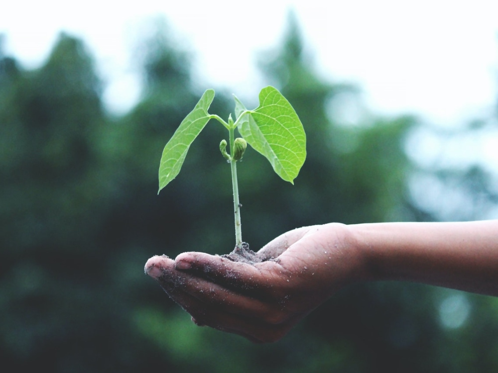

El término “sustentabilidad” ha sufrido diferentes transformaciones a lo largo del tiempo hasta llegar al concepto moderno basado en el desarrollo de los sistemas socioecológicos para lograr una nueva configuración en las tres dimensiones centrales del desarrollo sustentable: la económica, la social y la ambiental.
La RAE afirma que el término sustentable es algo que se puede sustentar por sí mismo y por otro lado el término sostenible es un proceso que se mantiene por sí solo. Un ejemplo para sostenibles es un desarrollo económico que no necesite de ayuda exterior y que no merme los recursos ya existentes. La responsabilidad social se apoya en la sustentabilidad y la sostenibilidad para mantener sistemas y procesos sin degradarse en el largo plazo.
El día de hoy, el concepto de sustentabilidad es la habilidad de lograr una prosperidad económica sostenida en el tiempo protegiendo al mismo tiempo los sistemas naturales del planeta y proveyendo una alta calidad de vida para las personas.